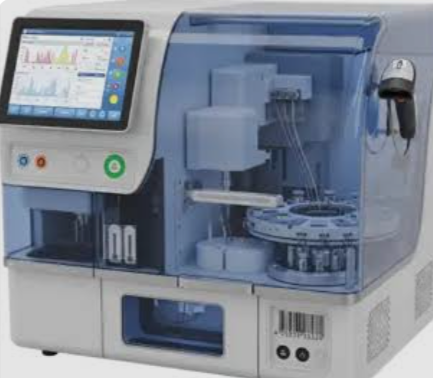

Our Automated Analyzer is a high-precision machine used to process blood and urine samples rapidly and accurately. It minimizes human error, increases testing efficiency, and delivers reliable diagnostic results for parameters like blood counts, glucose levels, and liver function markers.